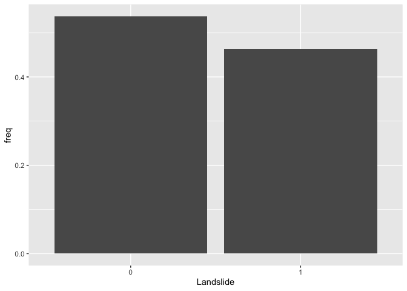

Logistic Regression
GEO 200CN - Quantitative Geography
Professor Noli Brazil
April 24, 2024
In the past couple of labs we’ve learned how to run and interpret linear regression models. Linear regression models are used when your outcome is a continuous numeric variable. But what if you’re outcome is categorical? Specifically, it has two classes, Yes or No. In this case, we use the logistic regression model. The objectives of this lab are as follows
- Learn how to run and evaluate a logistic regression model
- Learn how to calculate and evaluate model fit
To help us accomplish these learning objectives, we will examine the association between landslide occurrence and various environmental factors in the San Pedro Creek Watershed in Pacifica, CA.
Installing and loading packages
We introduce one new package in today’s lab
install.package("lmtest")Load this package along with others we need.
library(tidyverse)
library(lmtest)Why logistic regression?
The reasons why you run a logistic regression are the same as the reasons for running a regular linear regression. However, there is one additional important motivation: we want to model the relationship between a set of independent variables and a binary outcome.
In many situations in your work as a Geographer, your outcome will be of a qualitative nature. When we speak of qualitative outcomes, we generally are concerned with the observation of:
- A particular classification
- Invasive species or not; urban or not
- A particular behavior
- Migrated or not; fire ignition
- A transition
- Riverbank erosion; employed to unemployed;
- A threshold characteristic
- Income below poverty level; concentrations exceeding a particular anthropogenic pollution threshold
In general, each of these outcomes would be coded as a binary variable (1 or 0; Yes or No). You can use a linear regression to model a binary outcome, but you’ll typically break the assumption of homoskedastic residuals and you may get predictions outside of 1 or 0. That’s why you’ll need to turn to logistic regression to model the relationship.
Bring in the data
Download the file landslides.csv from Canvas in the Week 4 Lab and Assignment folder. Bring in the file in
landslides <- read_csv("landslides.csv")The data contain various locations in the San Pedro Creek Watershed in Pacifica, CA. The main goal of the analysis is to examine the characteristics that are associated with landslide occurrence. Landslides were detected on aerial photography from 1941, 1955, 1975, 1983, and 1997, and confirmed in the field during a study in the early 2000’s. We’ll create a logistic regression to compare landslide probability to various environmental factors. We’ll use elevation elev, slope slope, hillshade hillshade, distance to nearest stream stD, distance to nearest trail trD, and the results of a physical model predicting slope stability as a stability index SI.
Our research question is: What environmental characteristics are associated with landslide occurrence?
We will be diving into spatial data next lab, but that should not
stop us from doing some rudimentary mapping. Specifically, we have
latitude and longitude points for each location in the dataset, so we
can map the data using our good friend ggplot(). We’ll
indicate which area experienced a landslide or not using the variable
IsSlide. We need to convert it to a factor to “color” it as a
categorical.
ggplot(landslides) +
geom_point(mapping = aes(x = lon,
y = lat, col = as.factor(IsSlide))) +
xlab("Longitude") +
ylab("Latitude") +
labs(color = "Landslide")
Simple Logistic Regression
We first examine the distribution of our binary dependent variable IsSlide. We create a bar chart showing the distribution of the landslide indicator.
landslides %>%
group_by(IsSlide) %>%
summarize (n = n()) %>%
mutate(freq = n / sum(n)) %>%
ggplot() +
geom_bar(mapping=aes(x=as.factor(IsSlide), y=freq),stat="identity") +
xlab("Landslide")
Let’s now run a logistic regression model. We’ll start simple,
regressing IsSlide on slope. Instead of using the
function lm() to run a logistic regression model as we did
when running linear regression models, we will use the function
glm(), which stands for Generalized Linear Models.
glm() is similar to lm(), but gives us the
option of a variety of families to use in fitting the model (the shape
that we hypothesize represents the shape of the function f that
defines the relationship between Y and X).
We specify a family by using the argument family =. If
we wanted a standard linear regression, which assumes a normal
distribution, family will equal gaussian
(fancy word for normal). For a list of glm families, check
the help documentation ? glm. We use
family = binomial for a logistic regression.
logit1.fit <- glm(IsSlide ~ slope,
family = binomial,
data = landslides)We can summarize the modelling results using summary().
The resulting output is very similar to the output from
lm().
summary(logit1.fit)##
## Call:
## glm(formula = IsSlide ~ slope, family = binomial, data = landslides)
##
## Coefficients:
## Estimate Std. Error z value Pr(>|z|)
## (Intercept) -3.39142 0.37008 -9.164 <2e-16 ***
## slope 0.13471 0.01387 9.715 <2e-16 ***
## ---
## Signif. codes: 0 '***' 0.001 '**' 0.01 '*' 0.05 '.' 0.1 ' ' 1
##
## (Dispersion parameter for binomial family taken to be 1)
##
## Null deviance: 668.29 on 483 degrees of freedom
## Residual deviance: 513.54 on 482 degrees of freedom
## AIC: 517.54
##
## Number of Fisher Scoring iterations: 5Question 1: What is the interpretation of the slope coefficient?
Let’s compare our results to those from an OLS regression model. An
OLS for a binary response variable is known as a linear probability
model. We use glm() again, but this time use the (default)
Gaussian distribution.
ols.fit <-glm(IsSlide ~ slope,
family = gaussian,
data = landslides)and a summary
summary(ols.fit)##
## Call:
## glm(formula = IsSlide ~ slope, family = gaussian, data = landslides)
##
## Coefficients:
## Estimate Std. Error t value Pr(>|t|)
## (Intercept) -0.076552 0.044594 -1.717 0.0867 .
## slope 0.023734 0.001767 13.429 <2e-16 ***
## ---
## Signif. codes: 0 '***' 0.001 '**' 0.01 '*' 0.05 '.' 0.1 ' ' 1
##
## (Dispersion parameter for gaussian family taken to be 0.181679)
##
## Null deviance: 120.331 on 483 degrees of freedom
## Residual deviance: 87.569 on 482 degrees of freedom
## AIC: 552.06
##
## Number of Fisher Scoring iterations: 2Question 2: What is the interpretation of the slope coefficient in ols.fit?
You can create a plot like the one showed in Handout 5 (right hand
plot) by predicting the probability of a landslide for given values of
slope. The minimum and maximum slope for our data set are 0 and
42.29, respectively, so let’s predict landslide occurence for slopes
between 0 to 43 using the predict() function. The function
below tells R to give predicted landslide occurrence for values of
slope between 0 and 43.
pfit1 <- predict(logit1.fit,
slope = c(0:43))In predicting using a regression model, you can either predict landslides for the 484 observations in the original data set or predict for a new set of observations. In the code above, we are predicting for a new set of observations - areas with slopes between 0 and 43 - i.e. 0, 1, 2, 3 … 41, 42, and 43.
Let’s get a summary of our predicted values
summary(pfit1)## Min. 1st Qu. Median Mean 3rd Qu. Max.
## -3.3914 -1.1843 0.0494 -0.3301 0.7812 2.3059We get values ranging from -3.4 to 2.3. But, these are not
probabilities. Remember, as described in the handout, the response
variable is modelled as a logit, so R will give us logits in return. To
convert the logit to a probability, use the argument
type = "response" inside predict()
pfit1 <- predict(logit1.fit,
data.frame(slope = c(0:43)),
type = "response")
summary(pfit1)## Min. 1st Qu. Median Mean 3rd Qu. Max.
## 0.03256 0.12543 0.37882 0.42496 0.72158 0.91692The predicted probability of a landslide ranges from 3.3% to 91.7%.
Question 3: Create a plot similar to the one shown in this week’s handout (right hand plot) showing the predicted probabilities from logit1.fit and the observed data.
Question 4: Create a plot similar to the one shown in this week’s handout (left hand plot) showing the predicted probabilities from ols.fit and the observed data.
Multiple Logistic Regression
We now move to the multiple logistic regression framework by adding more than one independent variable. Let’s add the variable hillshade, which is a categorical variable (High, Mid, and Low).
logit2.fit <- glm(IsSlide ~ slope + hillshade,
family = binomial,
data = landslides)
summary(logit2.fit)##
## Call:
## glm(formula = IsSlide ~ slope + hillshade, family = binomial,
## data = landslides)
##
## Coefficients:
## Estimate Std. Error z value Pr(>|z|)
## (Intercept) -3.18010 0.44451 -7.154 8.42e-13 ***
## slope 0.14545 0.01582 9.195 < 2e-16 ***
## hillshadeLow -0.92891 0.30165 -3.079 0.00207 **
## hillshadeMid -0.49244 0.27044 -1.821 0.06862 .
## ---
## Signif. codes: 0 '***' 0.001 '**' 0.01 '*' 0.05 '.' 0.1 ' ' 1
##
## (Dispersion parameter for binomial family taken to be 1)
##
## Null deviance: 668.29 on 483 degrees of freedom
## Residual deviance: 503.68 on 480 degrees of freedom
## AIC: 511.68
##
## Number of Fisher Scoring iterations: 5Let’s calculate the predicted probability of a landslide at each value of hillshade, holding the slope at its mean. We need to create a data frame containing the values for slope and hillshade that we want to predict for. What are the categories of hillshade?
table(landslides$hillshade)##
## High Low Mid
## 121 121 242Let’s save these categories in a vector.
hillshade <- c("High", "Mid", "Low")Now you need to create a data frame containing the vector
hillshade we created above as one column and the overall mean
of slope as another column (name the column slope
because it needs to match the variable name used in the prediction
model). So you should have a 3 x 2 data frame. Then plug this data frame
into the predict() function following what we did
earlier.
Question 5: What is the difference in the probability of a landslide between a Low hillshade area and a High hillshade area holding the slope at its mean?
Handout 5 goes through the various ways we can interpret logistic regression coefficients. We already went through a few above. What about the odds ratio interpretation?
Question 6: Convert the logit2.fit coefficients to interpret them as the change in the odds ratio with a one unit increase in the independent variables. For a one unit increase in slope, the odds of a landslide (versus no landslide) increase by a factor of what amount?
Goodness of fit
The Handout goes through measures of best fit for a logistic regression model. Fortunately, some of these measures are reported in the model summary. Let’s run a multiple logistic regression model adding more variables to the model. Below, we’ve added curvature, elevation, distance to the nearest stream, and distance to the nearest trail.
logit3.fit<- glm(IsSlide ~ slope + hillshade + curv + elev + stD + trD,
family = binomial,
data = landslides)How does this model compare to one that also includes the slope stability index?
logit4.fit<- glm(IsSlide ~ slope + hillshade + curv + elev + stD + trD + SI,
family = binomial,
data = landslides)Executing summary() on these results will give us some
but not all of the fit measures discussed in the handout. The likelihood
ratio test can be run using the function lrtest(), which is
part of the lmtest package. The function allows you
compare the fit between two different models.
Question 7: What are the null and alternative hypotheses for the Likelihood ratio test?
Question 8: Based on the fit measures discussed in the handout, which model, logit3.fit and logit4.fit, provides the best fit? Explain why.

This
work is licensed under a
Creative
Commons Attribution-NonCommercial 4.0 International License.
Website created and maintained by Noli Brazil